МИНИСТЕРСТВО ТРАНСПОРТНОГО СТРОИТЕЛЬСТВА
ТЕХНИЧЕСКИЕ
УКАЗАНИЯ
ПО ПРИМЕНЕНИЮ СБОРНЫХ
РЕШЕТЧАТЫХ КОНСТРУКЦИЙ
ДЛЯ УКРЕПЛЕНИЯ
КОНУСОВ И ОТКОСОВ
ЗЕМЛЯНОГО ПОЛОТНА
ВСН 181-74
МИНТРАНССТРОЙ
Утверждены Техническим
управлением Министерства
транспортного строительства 5 февраля
1974 г. приказом № 5
МОСКВА 1974
Приведены варианты решетчатых конструкций из сборных железобетонных и армированных цементогрунтовых элементов и их применение для укрепления конусов и откосов земляного полотна в целях защиты от деформации, связанных с нарушением местной устойчивости. Изложены требования к изготовлению сборных элементов и их монтажу на поверхности откосов, а также содержание укрепленных откосов в период эксплуатации. В приложениях даны характеристика нарушений местной устойчивости, методика определения расчетных характеристик и расчет экономической эффективности.
Существующие способы укрепления откосов путем создания травяного покрова в определенных условиях неэффективны. В ряде районов травосеяние затруднено или невозможно из-за неблагоприятных климатических условий и отсутствия растительного грунта.
Применение сборных бетонных, железобетонных и асфальтобетонных плит для укрепления неподтапливаемых откосов, а также в случае временного или постоянного подтопления нецелесообразно и неэффективно из-за их высокой стоимости и значительной трудоемкости работ по их изготовлению и монтажу.
В связи с этим в Союздорнии и ЦНИИС были исследованы возможности использования сборных решетчатых конструкций для укрепления конусов и откосов.
«Технические указания по применению сборных решетчатых конструкций для укрепления конусов и откосов земляного полотна» разработаны на основе теоретических исследований, анализа опытных работ, проектных данных и результатов обследования состояния конструкций укрепления из сборных элементов в процессе эксплуатации конусов и откосов земляного полотна автомобильных и железных дорог в различных природных условиях.
«Технические указания» предназначены для руководства проектным и строительным организациям при назначении решетчатых конструкций для укрепления конусов и откосов, изготовлении сборных элементов и производстве укрепительных работ (для новостроек).
«Технические указания» разработаны Союздорнии (канд. техн. наук Ю. Л. Мотылевым, В. Д. Казарновским, инж. Ю. М. Львовичем и В. И. Чуевым), ЦНИИС (канд. техн. наук П. Г. Пешковым) с участием специалистов Союздорпроекта (канд. техн. наук Б. Ф. Перевозникова, инж. И. Ф. Бушинской), ТюМИСИ (канд. техн. наук А. В. Линцера, В. А. Юрченко, инж. С. И. Матейковича), Тюмендорстроя (инж. Ю. В. Юшкова и Б. Ф. Илясова), Мосгипротранса.
Предложения и замечания по настоящим Техническим указаниям просьба направлять по адресу: 143906, Московская область, Балашиха, Союздорнии.
|
Министерство транспортного строительства |
Ведомственные строительные нормы |
ВСН 181-74 |
|
Технические указания по применению сборных решетчатых конструкций для укрепления конусов и откосов земляного полотна |
Минтрансстрой |
|
|
Вновь |
1.1. Настоящие «Технические указания» предусматривают применение сборных решетчатых конструкций для укрепления конусов и откосов земляного полотна в целях их защиты от деформаций, связанных с нарушением местной устойчивости (табл. 1, 2 и приложение 1).
1.2. Выбор и назначение решетчатых конструкций для укрепления конусов и откосов следует осуществлять на основе конкретных данных о конструкции земляного полотна (высоте и крутизне откосов, наличии полок, дренажей и т.п.), погодно-климатических и гидрогеологических условиях, свойствах грунтов и характере изменения их прочности под воздействием попеременного набухания-высушивания и промерзания-оттаивания. Кроме того, необходимы данные о сроках строительства участка дороги и особенностях проекта его организации.
1.3. В каждом конкретном случае указанные конструкции укрепления следует назначать с учетом области их рационального применения.
|
Внесены Государственным всесоюзным дорожным научно-исследовательским институтом (Союздорнии) и Всесоюзным научно-исследовательским институтом транспортного строительства (ЦНИИС) |
Утверждены Техническим управлением Министерства
транспортного строительства |
Срок введения - |
Таблица 1
Формы нарушения местной устойчивости неподтапливаемых откосов
|
Воздействующие факторы |
||
|
а) Эрозионные деформации |
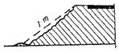 |
Движение воды по поверхности откосов |
|
б) Локальные деформации скольжения |
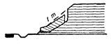 |
Промерзание-оттаивание, набухание-высушивание |
|
в) Деформации пластического течения |
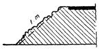 |
Промерзание-оттаивание, набухание-высушивание |
|
г) Оплывины и сплывы |
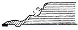 |
Промерзание-оттаивание, набухание-высушивание, влажность |
|
д) Выносы |
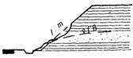 |
Силовое воздействие грунтовых вод |
Таблица 2
Формы нарушения местной устойчивости подтапливаемых откосов
|
Воздействующие факторы |
||
|
а) Потери устойчивости откосов, сплывы |
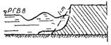 |
Силовое воздействие ветровых и судовых волн |
|
б) Размывы подошвы откосов насыпей |
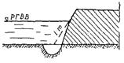 |
Движение речных вод вдоль насыпи |
|
в) Деформации откосов (частичные или сплошные) |
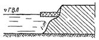 |
Ледоход и корчеход |
|
г) Потери устойчивости откосов, сплывы и оплывины |
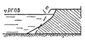 |
Длительное подтопление с периодическим колебанием уровня |
|
д) Выносы и сплыви в нижней части насыпи |
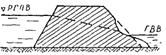 |
Силовое воздействие фильтрационных вод |
Условные обозначения:
Р. Г. В. В. - расчетный горизонт высоких вод;
Г. В. Л. - горизонт высокого ледохода;
Р. Г. П. В. - расчетный горизонт паводковых вод.
2.1. Решетчатые конструкции состоят из сборных железобетонных или армированных цементогрунтовых элементов, которые после объединения в стыках образуют на поверхности конуса или откоса решетку с ячейками заданного размера. Решетку присоединяют к поверхностным слоям грунта конуса или откоса металлическими штырями или железобетонными свайками, забиваемыми в узлах стыков.
Сборные элементы могут иметь диагональное или прямоугольное расположение в конструкции укрепления (табл. 3 и приложение 2).
2.2. В нижней части, возле подошвы земляного полотна, расположен бетонный или железобетонный упор, который воспринимает сдвигающее усилие от собственного веса решетчатой конструкции.
Упоры могут быть монолитными сечениями 30×40, 30×15 см или из сборных блоков сечением 20×20×34 см. В качестве такого упора в определенных случаях могут служить сами сборные элементы, образующие нижний пояс. Упор выполняют в виде сплошного ленточного нижнего пояса или прерывистый, устанавливаемый только перед стыками нижних элементов по типу отдельных упорных зубьев или железобетонных сваек.
2.3. Длину штырей и сваек назначают в зависимости от предполагаемой мощности зоны поверхностных слоев откоса, где прочность грунта может быть нарушена в результате циклических воздействий промерзания-оттаивания, увлажнения (набухания)-высушивания, а также силовых воздействий текучих или паводковых вод (подтапливаемые конусы и откосы), но не менее 0,5 и не более 1,5 м.
Металлические штыри выполняют из арматуры периодического профиля диаметром 20-30 мм; железобетонные свайки (вариант № 1, а, б) - диаметром 30-80 мм.
2.4. Стыки объединения сборных элементов могут иметь жесткое замковое соединение (табл. 3, варианты № 1-3, 5) или гибкое соединение с помощью арматурных петель (табл. 3, варианты № 4, 6).
2.5. Для заполнения ячеек следует применять:
засев трав по растительному грунту методом гидропосева или механизированным методом;
местный морозостойкий (непучинистый) грунт с последующим засевом трав методом гидропосева;
гравийно-песчаные смеси;
торфо-песчаные смеси;
щебень размером 40-70 мм;
каменную наброску с размером камня 50-100 мм;
грунты, обработанные минеральными или органическими вяжущими (в том числе и нефтью);
песчаный асфальтобетон;
монолитный цементобетон, в том числе тощий и песчаный.
Таблица 3
Варианты решетчатых конструкции
|
Конструкция |
Схема конструкции |
Сечение элементов (1-1), см |
Количество элементов на 1000 м2, шт. |
Длина элемента, см |
Вес, кг |
Расход бетонной смеси, м2 |
Расход металла, кг/100 м2 |
|||
|
одного элемента |
общий на 100 м2 |
на один элемент |
общий на 100 м2 |
|||||||
|
1 |
Треугольная и ромбическая с диагональным расположением элементов |
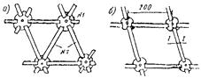 |
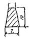 |
84 60 |
200 |
27 |
2275 1625 |
0,011 |
0,91 0,69 |
120 87 |
|
2 |
Облегченная с диагональным расположением элементов |
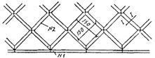 |
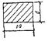 |
№ 1 - 10 |
260 |
34 |
2180 |
0,0135 |
0,91 |
Диаметром 4 мм - 80 |
|
№ 2 - 80 |
160 |
23 |
0,0096 |
Диаметром 6 мм - 232 |
||||||
|
3 |
С прямоугольным расположением элементов и диагональным |
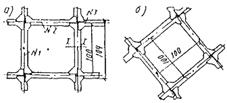 |
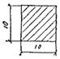 |
№ 1 - 157 |
100 |
26,1 |
5380 |
0,0104 |
2,16 |
101 |
|
№ 2 - 25 |
23,4 |
0,0093 |
||||||||
|
№ 2 - 25 |
27,8 |
0,0111 |
||||||||
|
4 |
Универсальная (любое расположение элементов) «ригель - стойка» |
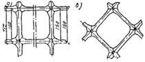 |
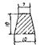 |
199 94 |
100 150 |
37,8 27,0 |
3580 5210 |
0,0108 |
1,42 2,08 |
94 143 |
|
5 |
Усиленная с прямоугольным расположением элементов |
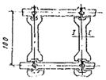 |
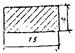 |
№ 1 - 88 |
100 |
48,8 |
8370 |
0,0195 |
3,40 |
79 |
|
№ 2 - 105 |
39,8 |
0,0159 |
||||||||
|
6 |
Рамная |
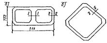 |
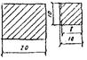 |
50 рам |
200 |
180 |
9000 |
0,072 |
3,6 |
505 |
3.1. Решетчатые конструкции из сборных элементов для неподтапливаемых откосов рационально применять при укреплении:
а) конусов и откосов, сложенных легкоразмываемыми песчаными и глинистыми грунтами, склонными к эрозионным деформациям в случаях:
когда травосеяние неэффективно в связи с опасностью развития эрозионных деформаций в период образования корневой системы трав, а одерновка нецелесообразна из-за больших трудозатрат;
когда травосеяние невозможно или неэффективно в связи с неблагоприятными климатическими и почвенными условиями, а одерновка неприменима из-за отсутствия дерна;
б) конусов путепроводов вместо сборных железобетонных плиток или монолитных облицовок;
в) откосов, сложенных глинистыми грунтами (преимущественно тяжелыми суглинками или жирными глинами четвертичного и более раннего периода), склонными к развитию локальных деформаций скольжения или пластического течения (табл. 1, б, в) с последующим образованием сплывов и оплывин, в случаях:
разуплотняющихся при снятии бытовой нагрузки глинистых грунтов (в выемках);
набухающих и усадочных грунтов при α > 10, μ < 0,4 (см. приложение 1);
грунтов, опасных по химическому выветриванию;
г) откосов в случаях, когда имеется опасность быстрого перехода грунта поверхностных слоев в текучее состояние с образованием сплывов и оплывин, а именно:
при разработке выемок в пылеватых грунтах и сооружении насыпей из них;
при разработке выемок в переувлажненных грунтах (коэффициент консистенции B > 0,5);
при наличии водонеустойчивых грунтов, переходящих при незначительном увеличении влажности в текучее состояние (грунты с числом пластичности меньше 12);
д) откосов выемок из глинистых грунтов при наличии мест с локализованными выходами горизонтов грунтовых вод в случаях, когда имеется опасность возникновения выносов, сплывов и оплывин (взамен присыпных откосных дренажей);
е) откосов, сложенных глинистыми грунтами в стесненных условиях, когда необходимо увеличить их крутизну до величины большей, чем это определено расчетом на местную устойчивость (см. приложение 1), но не более крутизны, назначаемой из условия обеспечения общей устойчивости;
ж) во всех случаях, когда необходимо срочно укреплять откосы в связи с вероятностью развития деформаций, в результате внезапных ливней, таяния мощных снегов, наличия дочетвертичных отложений грунтов и других опасных условий.
3.2. Подтапливаемые откосы земляного полотна железных дорог ниже границы волнового воздействия сборными решетчатыми конструкциями не укрепляют.
Для подтапливаемых откосов земляного полотна автомобильных дорог решетчатые конструкции из сборных элементов рационально применять:
а) при укреплении низовых откосов пойменных насыпей, а также внутренних откосов регуляционных сооружений в случаях, когда травосеяние невозможно в связи с неблагоприятными климатическими и грунтовыми условиями или неэффективно, одерновка неприменима из-за отсутствия дерна, а фашинные конструкции и хворостяные выстилки требуют значительных трудозатрат;
б) при укреплении верховых откосов пойменных насыпей на подходах к мостам через реки, водоемы, канавы, водохранилища, а также для защиты откосов набережных и других сооружений, когда по характеру расчетных гидрометеорологических условий применение сборных плит или монолитных конструкций экономически нецелесообразно, в случаях:
воздействия небольших ветровых или судовых волн (см. табл. 2);
движения речных вод с относительно малыми скоростями течения (см. табл. 2, б);
наличия незначительного ледохода (см. табл. 2);
в) при укреплении откосов пойменных насыпей в случае их длительного (более 20 суток) подтопления, когда по другим гидрометеорологическим условиям применение сборных плит и монолитных конструкций экономически нецелесообразно, а использование фашинных конструкций, плетневых заборов и т.п. сопряжено с большими трудозатратами;
г) при укреплении верхней части низовых и верховых откосов, подверженных размыву только в нижней части;
д) во всех прочих случаях, когда расчетные гидрометеорологические условия позволяют применять решетчатые конструкции, при наличии местных каменных и других материалов, рекомендуемых для заполнения ячеек (п. 2.5);
е) для архитектурного оформления поверхности откосов высоких пойменных насыпей на подходах к мостам через широкие реки, каналы и водоемы, возводимые вблизи городов и населенных пунктов, когда это экономически целесообразно и эффективно при расчетных гидрометеорологических данных.
4.1. Решетчатые конструкции для защиты откосов от деформаций, связанных с нарушениями местной устойчивости, необходимо назначать на основе:
данных о наличии деформаций поверхностных слоев конусов и откосов, находящихся в аналогичных грунтовых, гидрогеологических и климатических условиях с проектируемым объектом;
результатов полевых и лабораторных исследований изменения свойств и состояния грунта под воздействием процессов физико-химического выветривания;
результатов оценки местной устойчивости откосов с учетом мощности активной зоны, опасной с точки зрения развития сплывов и оплывин (см. приложение 1);
технико-экономического сравнения решетчатых конструкций с другими мероприятиями по обеспечению местной устойчивости откосов.
4.2. При окончательном решении о назначении решетчатых конструкций для укрепления конусов и откосов следует учитывать в каждом конкретном случае наиболее рациональное сочетание конструктивных параметров: собственный вес решетки, размер ячеек, материал их заполнения, расположение сборных элементов (прямоугольное или диагональное) на поверхности откоса; целесообразность устройства и т.д.
4.3. При укреплении конусов путепроводов, высоких откосов насыпей, набережных и т.д. необходимо учитывать эстетические требования и назначать решетчатые конструкции с диагональным расположением элементов и заполнением ячеек цветными материалами: цветным щебнем, синтетическими материалами, посевом специально подобранных трав и т.д.
Неподтапливаемые откосы
4.4. Для укрепления конусов путепроводов и откосов земляного полотна неподтапливаемых насыпей, а также сухих выемок в целях защиты их от развития эрозионных деформаций рекомендуются варианты решетчатых конструкций № 1, б, 2, 4. Ячейки следует заполнять растительным грунтом с последующим посевом трав методом гидропосева, а в неблагоприятных для прорастания травы условиях (п. 3.1, а) местными (непривозными) естественными материалами: гравийно-песчаными, торфо-песчаными смесями, мелким камнем и т.п.
Длину металлических штырей в конструкциях вариантов № 2 и 4 назначают равной 0,5 м, а размер ячеек - 150×150 см. Длину железобетонных сваек (вариант № 1, б) - 1 м.
4.5. При укреплении откосов земляного полотна, глинистые грунты которых склонны к быстрому переходу в текучее состояние в весенний период с образованием сплывов и оплывин глубиной 0,5 м, назначают решетчатые конструкции вариантов № 1, а и 4. Длину металлических штырей в варианте № 4 назначают равной 0,8 м, размер ячеек - 100×100 см. Длину железобетонных сваек (вариант 1, а) - 1 м.
Ячейки заполняют:
- местным морозостойким (непучинистым) грунтом с последующим гидропосевом при сооружении земляного полотна из пылеватых грунтов;
- каменной наброской (вариант № 4), гравием, гравийно-песчаными смесями и другими местными материалами при разработке выемок в переувлажненных грунтах (коэффициент консистенции B ≥ 0,5), а также при возведении насыпей из влагоемких грунтов в осенне-зимний период.
4.6. Откосы насыпей и сухих выемок из глинистых грунтов (п. 3.1), опасных с точки зрения развития деформаций локального скольжения или пластического течения на всей глубине зоны воздействия погодно-климатических факторов, необходимо укреплять при помощи решетчатых конструкций варианта № 3 (приложение 2, рис. 3).
Длину металлических штырей принимают равной 1-1,5 м.
Ячейки заполняют местным морозостойким (непучинистым) и ненабухающим грунтом с последующим посевом трав методом гидропосева.
4.7. При укреплении откосов выемок в случае выклинивающихся горизонтов грунтовых вод периодического действия с незначительным дебитом (менее 0,1 л/сек на 1 м водоносного горизонта) рекомендуются конструкции вариантов № 3 и 4 (приложение 2, рис. 3, 4).
Ячейки заполняют щебнем или гравием размером 40-70 мм, длину штырей принимают равной - 1 м.
При этом конструкцию целесообразно устраивать не на всю высоту откоса, а только от подошвы выемки и до границы выхода горизонтов грунтовых вод +0,5 м. Верхнюю оставшуюся часть откоса укрепляют посевом трав по растительному грунту.
Если горизонты грунтовых вод находятся в нижней части выемки, то следует назначать решетчатую конструкцию варианта № 6, а и б с аналогичным заполнением ячеек (приложение 2, рис. 5).
4.8. Для укрепления откосов насыпей и выемок из глинистых грунтов при необходимости увеличения их крутизны в стесненных условиях принимают решетчатые конструкции варианта № 5 (приложение 2, рис. 4).
Ячейки заполняют местным камнем или грунтом, обработанным вяжущими материалами; длину штырей принимают равной 1 м.
Подтапливаемые откосы
4.9. При укреплении подтапливаемых откосов вариант решетчатых конструкций следует устанавливать в зависимости от вида материала для заполнения ячеек и соответствующих ему допускаемых (предельных) гидрогеологических условий по табл. 4.
4.10. Для укрепления конусов и откосов пойменных насыпей, набережных и других земляных сооружений следует назначать решетчатые конструкции вариантов № 3, 5, 6 (приложение 2, рис. 3, 4, 5):
а) конструкция № 3 рекомендуется для наиболее легких гидрогеологических условий в местах укрепления низовых откосов пойменных насыпей, внутренних откосов траверс, регуляционных сооружений и т.п. при незначительном волнобое (высота волны до 0,3 м) и скорости течения воды, не вызывающей размыва подошвы насыпей; длина штырей - 1 м;
б) конструкции № 5, 6 применяют для наиболее тяжелых гидрогеологических условий, пределами которых являются:
максимальная скорость течения воды - не более 2,5 м/сек;
высота волны с набегом - не более 0,5 м;
толщина льда - не более 0,6 м;
корчеход с размерами отдельных деревьев - не более 5-6 м в длину и 0,3 м в диаметре;
максимальная глубина размыва подошвы - не более 2 м;
ледоход с размером льдин - не более 5×7 м.
Длина штырей в конструкциях № 5, 6 - 1,5 м.
Таблица 4
Условия применения типов заполнения ячеек решетчатых конструкций
|
Длительность подтопления, сутки |
Скорость течения, м/сек |
Высота волны, м |
Толщина льда, м |
Ледоход |
Корчеход |
|
|
I - растительный грунт с засевом трав |
Менее 20 |
Не более 0,5 |
Отсутствует |
Не более 0,3 |
Отсутствует |
Отсутствует |
|
II - грунт, обработанный вяжущим (8-15 %) |
Менее 20 |
Не более 0,8-1,0 |
Не более 0,2-0,3 |
Не более 0,3 |
Слабый в виде отдельных льдин размером не более 10 м |
Отдельные деревья не более 3 м в длину и 0,1-0,2 м в диаметре |
|
III - каменная наброска |
20 и более |
В зависимости от крупности камня, но не более 1,0-1,5 |
По расчету |
0,4-0,5 |
То же |
То же |
|
IV - монолитный бетон |
20 и более |
1,5-2,5 |
Не более 0,5 |
Не более 0,6 |
Со средней интенсивностью при размерах отдельных льдин не более 5×7 м |
Наличие деревьев не более 5-6 м в длину и в диаметре до 0,5 м |
4.11. Для рационального применения решетчатых конструкций их необходимо назначать дифференцированно, по зонам подтопления конусов и откосов, в зависимости от характера гидрогеологических условий в этих зонах (рис. 1).
Рис. 1. Зоны укрепления подтопляемых откосов:
I - зона постоянного уровня подтопления; II - зона паводкового подтопления; III - зона паводкового волнового воздействия; Р. У. П. В. - расчетный уровень паводковых вод; Г. М. В. - горизонт меженных вод; Δhвл - высота волны
Целесообразно применять комбинированные конструкции для укрепления как по высоте, так и по длине откоса (например, пойменной насыпи в пределах подтопления).
Также рекомендуется заполнять ячейки различными материалами, комбинируя их в зависимости от изменения гидрогеологических условий.
4.12. При назначении решетчатых конструкций необходимо предусматривать рациональное и экономически целесообразное сочетание их с другими конструкциями укреплений, известными в практике транспортного строительства: с бетонными и железобетонными плитками, гибкими покрытиями в виде тюфяков, а также с каменной наброской (рис. 2). В случае возможного размыва подошвы насыпи необходимо предусматривать защиту подошвы откоса от размыва.
4.13. Для защиты подошвы откоса, а также упора (п. 2.1), находящегося в зоне размыва, следует использовать:
а) каменную наброску, объем которой должен быть рассчитан на защиту от размыва, а крупность камня должна соответствовать (в зоне размыва) максимальной скорости течения воды при расчетной глубине размыва. При определении объема камня следует принимать уклон откоса воронки размыва, равным 1:2, а толщину слоя каменной наброски - не менее размера двух камней;
б) гибкие покрытия в виде различных плит или гибких тюфяков, укладываемых на поверхность с уклоном 1:1,5 в сторону воронки размыва. Длину укрепления из гибких конструкций принимают с учетом их опускания в воронку размыва с уклоном 1:2 на расчетную глубину;
в) комбинированные конструкции (см. рис. 2, а) в виде гибких покрытий совместно с каменной наброской при небольшой глубине меженных вод.
4.14. При использовании в нижней части подошвы насыпей гибких укреплений рекомендуется заменять ленточный упор в решетчатых конструкциях вариантов № 3, 5, 6 свайными.
Рис. 2. Назначение укреплений подтопляемых откосов:
а - при отсутствии размывов у подошвы и отсутствии меженных вод; б - при размывах у подошвы и отсутствии меженных вод; в - то же, но при наличии меженных вод; 1 - засев трав; 2 - металлические штыри: 3 - решетчатая конструкция; 4 - гибкое укрепление; 5 - бетонный упор; 6 - каменная наброска; 7 - обратная засыпка
4.15. Откосы пойменных насыпей высотой более 6 м при отсутствии размыва у подошвы насыпи, а также при отсутствии в период строительства меженных или подпорных вод следует укреплять по схеме рис. 3; при наличии меженных вод и размывов у подошвы нижнюю часть высоких откосов укрепляют по схемам рис. 1, 2.
Рис. 3. Назначение укреплений откосов пойменных насыпей высотой более 6 м:
1 - засев трав; 2 - стальные штыри; 3 - решетчатая конструкция; 4 - бетонный упор
4.16. В случае применения решетчатых конструкций для укрепления высоких откосов, которые разделены на ярусы, ширину бермы между ними (см. рис. 3) определяют по формуле
lб = n · l + (by + bc) м, (1)
где п - количество сборных элементов, определяющих размеры ячеек обрешетки;
l - расстояние между узлами объединения (в осях) сборных элементов решетки, м;
by - ширина основания упора, м;
bс - проекция скошенной грани упора на его основание, м.
Упор на берме назначают при необходимости укрепления откоса, расположенного выше бермы, с длиной образующей не менее 3 м.
Ширину бермы без упора находят по формуле
lб = п · l м. (2)
5.1. Сборные элементы могут быть изготовлены из железобетона (в том числе и из песчаного) и армированного цементогрунта.
5.2. Требования к бетону из сборных элементов должны соответствовать ГОСТ 8424-72 «Бетон дорожный». Марки бетона назначают по табл. 5.
Таблица 5
|
Прочность бетона на растяжение при |
Марка бетона решетчатых конструкций из сборных элементов для откосов |
|
|
подтапливаемых |
неподтапливаемых |
|
|
Изгибе |
50-45 |
50-25 |
|
Сжатии |
400-360 |
400-200 |
Для сборных элементов бетон дополнительно должен удовлетворять требованиям ГОСТ 4795-68, предъявляемым к гидротехническому бетону с точки зрения устойчивости против агрессивных вод.
В целях повышения морозостойкости бетона следует применять воздухововлекающие и пластифицирующие поверхностно-активные добавки.
5.3. Песчаный бетон для сборных элементов приготавливают из цемента, воды и песка с обязательным введением добавок поверхностно-активных веществ, способствующих повышению долговечности конструкций.
Для приготовления песчаного бетона следует использовать цементы, отвечающие требованиям ГОСТ 8424-63 и ГОСТ 10178-62* п. 16.
В качестве заполнителя, в песчаных бетонах применяют природные кварцевые, кварцево-полевошпатовые и искусственные пески из горных пород, «фракционированные и нефракционированные, удовлетворяющие требованиям ГОСТ 10268-70 «Заполнители для тяжелого бетона» и ГОСТ 8736-67 «Пески для строительных работ».
Проектирование состава песчаных бетонов, приготовление смесей и уход за готовыми изделиями следует осуществлять в соответствии с «Техническими указаниями по применению мелкозернистых (песчаных) цементных бетонов в дорожном строительстве» ВСН 171-70.
5.4. Цементогрунт для сборных элементов может быть двух видов: обычный цементогрунт и цементогрунт автоклавного твердения.
5.5. Обычный цементогрунт должен удовлетворять требованиям СН 25-64 (I класс прочности), процент вяжущего при этом должен быть не менее 10-12 %. Морозостойкость не менее 50 циклов. В качестве заполнителя рекомендуется применять местные пески и супесчаные грунты.
5.6. Цементогрунт автоклавного твердения отличается от обычного цементогрунта обработкой при твердении изделий (под давлением насыщенного пара 8-10 ати). Для автоклавного цементогрунта установлены следующие марки по пределу прочности на растяжение при изгибе «60», «55», «50», «45», «35», «40» и при сжатии «400», «350», «300», «250», «200», «150» кГс/см2; морозостойкость не менее 50 циклов; содержание вяжущего 12-25 %.
Для приготовления цементогрунтовых смесей применяют портландцемент, шлакопортландцемент, удовлетворяющие требованиям ГОСТ 10178-62*. Наиболее пригодны для автоклавного цементогрунта песчаные и супесчаные грунты с числом пластичности 1-7.
5.7. Для армирования сборных элементов применяют арматуру из горячекатаной стали периодического профиля марки 25ГС или 35ГС по ГОСТ 8478-66.
5.8. Сборные элементы изготавливают на базах ЖБК, на стендах и полигонах (в летний период) в металлических или деревянных опалубках (см. приложение 2, рис. 7, 8).
Производство сборных элементов включает: приготовление бетонных или цементогрунтовых смесей, заполнение ими опалубки, установку арматуры и монтажных петель, уплотнение и соответствующий уход за готовыми изделиями в период твердения.
5.9. Выдерживать сборные элементы из автоклавного цементогрунта в целях их твердения рекомендуется в два этапа. На первом этапе (16-24 ч) элементы выдерживают в формах до начала запаривания их в автоклаве. На втором этапе осуществляют тепловую обработку. Ориентировочные режимы запаривания изделий в автоклаве даны в табл. 6.
Таблица 6
|
Давление пара и автоклаве, ати |
Режим автоклавной обработки, ч |
|||
|
подъем давления пара |
выдерживание при постоянном давлении |
спуск давления пара до атмосферного |
||
|
0,10 |
9 |
1 |
6 |
1 |
|
1,00 |
9 |
2 |
6 |
2 |
6.1. Монтаж решетчатых конструкций из сборных элементов необходимо начинать только после устройства водоотвода, траншейных дренажей, планировки и уплотнения откосов. К укреплению поверхности откосов высоких насыпей (выше 12 м) и глубоких выемок (глубже 12 м) приступают сразу после сооружения и окончательной отделки каждого яруса.
Откосы планируют экскаватором Э-4010, а высокие (выше 12 м) - планировочной рамой, навесной к стреле экскаватора. Местные неровности устраняют при монтаже решетчатых конструкций.
6.2. Перед началом монтажа должны быть выполнены разбивочные работы. Сначала разбивают базис - опорную линию для устройства бетонного упора или укладки нижнего ряда элементов. На базисе размечают размеры сборных элементов укладываемой конструкции и переносят их на поверхность откоса по образующим, перпендикулярным опорной линии, с закреплением осевых линий разбивочными колышками.
Для решетчатых конструкций с диагональным расположением элементов разбивку осуществляют по диагональным размерам ячеек.
6.3. Бетонный упор устраивают путем укладки блоков принятого размера в траншею, подготовленную по опорной линии. Места стыковки сборных бетонных блоков омоноличивают.
6.4. Сборные элементы транспортируют к месту укладки на бортовых автомобилях. Разгружают на обочину или на поверхность откоса автокраном кассетным способом.
6.5. Сборные элементы следует монтировать снизу вверх (см. приложение 2, рис. 9-12).
При монтаже треугольной конструкции варианта № 1, а элементы наращивают рядами; необходимое, удлинение верхних рядов на криволинейных участках компенсируют за счет увеличения зазоров в стыках. Ромбическую конструкцию варианта № 1, б монтируют в диагональном направлении снизу вверх к оси укрепляемой поверхности.
6.6. Металлические штыри и скобы в узлах забивают стальной кувалдой вручную; для железобетонных сваек предварительно бурят отверстия заданного диаметра и глубины мотобуром Д-10.
Металлические штыри, скобы и монтажные петли элементов перед укладкой необходимо смазать битумом.
6.7. После монтажа решетчатой конструкции ячейки заполняют заданным материалом, который подают краном или экскаватором, оборудованным грейферным ковшом (см. приложение 2, рис. 12).
Грунт, гравийно-песчаные смеси и щебень разравнивают экскаватором Э-4010 с досыпкой или выборкой лишнего материала вручную.
Укладку в ячейки местного камня, стабилизированных грунтовых смесей осуществляют вручную с помощью средств малой механизации.
6.8. Гидропосев выполняют после завершения монтажа конструкции, заполнения ячеек и устранения неровностей сборных элементов, полученных при укладке.
7.1. При производстве земляных, погрузочно-разгрузочных и укрепительных работ необходимо соблюдать требования по технике безопасности, изложенные в главе СНиП III-А.11-70.
7.2. Для передвижения рабочих по поверхности откосов и конусов следует применять деревянные переносные трапы и подмости.
7.3. Не допускается выгружать сборные элементы на обочину или поверхность откоса «навалом», т.е. непосредственно автомобилями-самосвалами. Элементы должны быть выгружены из транспортных средств с помощью автокрана и уложены в намеченные при разбивочных работах места на поверхности откоса.
7.4. Нельзя приступать к укрепительным работам на мокрой, а также на мерзлой поверхности откоса.
7.5. Для сборки решетчатых конструкций рабочие должны быть снабжены защитной спецодеждой и необходимым инструментом.
7.6. При монтаже решетчатых конструкций запрещается работа в нижней части откоса людей и механизмов на длине фронта работ плюс 15 м в обе стороны.
На эксплуатируемых линиях при движении поездов монтажные работы должны быть немедленно прекращены.
7.7. При одновременном монтаже решетчатых конструкций и бурении скважин разрыв между участками работ должен быть не менее 15 м.
7.8. При выполнении буровых работ станком Д-10 необходимо соблюдать соответствующие требования техники безопасности и правила эксплуатации станка.
7.9. Запрещается переноска бурового станка с работающим мотором по откосу.
8.1. При нарушении целостности материала, заполняющего ячейки, его необходимо восстановить.
8.2. При нарушении взаимного расположения сборных элементов после деформации пучения грунтов следует восстановить сплошность самой конструкции и упоров.
8.3. В случае выпучивания железобетонных сваек, установленных в отверстие монтажных элементов, на величину более 6 см за сезон, свайки удаляют, а взамен их в подошве конструкции устраивают упоры.
8.4. При нарушении устойчивости упоров и положения нижних рядов конструкции при восстановлении укрепления заменяют сплывший и переувлажненный связной грунт дренирующим с увеличением заглубления упора и повторной укладкой элементов нижнего ряда.
8.5. При нарушении общей устойчивости откосов и назначении специальных противодеформационных мероприятий, не требующих применения решетчатых конструкций для обеспечения местной устойчивости, элементы должны быть собраны для вторичного использования на других участках.
Нарушения местной устойчивости связаны с локальными деформациями в зонах, непосредственно примыкающих к поверхности откоса. Глубина захвата их обычно не превышает 2 м. Они могут возникать в любой части откоса (по его длине) независимо от степени обеспечения общей устойчивости и носят, как правило, прогрессирующий характер. Возникновение таких деформаций обусловлено снижением прочности грунта поверхностных слоев в результате циклического промерзания- оттаивания, набухания-высушивания, увлажнения, а также силовым воздействием поверхностных и грунтовых вод.
При оценке местной устойчивости следует учитывать:
- тип грунта, слагающего поверхностную зону откоса;
- влияние погодно-климатических факторов (увлажнения, высыхания, промерзания, оттаивания) на прочность грунта;
- условия увлажнения поверхностными и выклинивающимися на откос грунтовыми водами;
- условия залегания различных грунтов в откосе;
- экспозицию откоса;
- климатические особенности района строительства (глубину промерзания, величину снегового покрова, осадки, температуру и т.п.);
- вид земляного полотна: насыпь, выемка;
- высоту откоса.
В результате оценки местной устойчивости устанавливают вероятность возникновения деформаций, уточняют конструкции откосов земляного полотна, намеченные предварительно на основе оценки общей устойчивости, и выбирают комплекс мероприятий по обеспечению местной устойчивости.
Основные формы нарушения местной устойчивости
Наблюдения позволили установить следующие основные формы нарушения местной устойчивости откосов:
эрозионные деформации и размывы, которые обычно характерны для слабосвязных грунтов и возникают в результате движения воды по поверхности откоса; опасность эрозионных деформаций увеличивается с уменьшением сцепления грунта, увеличением крутизны и длины откоса, а также с повышением количества попадающей на откос воды;
вывалы - деформации, характерные для откосов в скальных, полускальных и других породах с резко выраженными цементационными связями; опасность вывалов возрастает с увеличением степени трещиноватости и подверженности пород выветриванию, а также степени их выветрелости при наличии опасного напластования, увлажнения, динамического воздействия (сейсмические условия, взрывы и т.д.);
локальные деформации скольжения, приводящие к полному нарушению устойчивости поверхностного слоя откоса с образованием явно выраженной поверхности скольжения, стенки отрыва, а также призмы выпирания; при этом в первом приближении смещающиеся части откоса можно рассматривать как монолитные блоки;
деформации пластического течения, носящие характер медленных перемещении, вызывающих образование трещин, заколов, наплывов, взбугриваний и т.п., связанных с постоянным изменением конфигурации откоса.
Такой характер деформаций откоса свидетельствует о наличии некоторой зоны пластических деформаций без явно выраженной поверхности скольжения;
Деформации локального скольжения и пластического течения развиваются в откосах выемок, сложенных тяжелыми глинистыми грунтами, и являются переходной стадией к развитию сплывов и оплывин;
оплывины - деформации, характерные для откосов из глинистых влагоемких грунтов и мелких водонасыщенных песков. Возникают эти деформации в результате резкого (без предварительной подготовки) перехода в текучее состояние грунтов в поверхностных зонах с соответствующими оплываниями их по откосу;
сплывы - деформации, по своему происхождению аналогичные оплывинам и отличающиеся от последних большей шириной зоны действия. Опасность возникновения сплывов и оплывин увеличивается в результате постепенного проявления деформаций пластического течения и локальных деформаций скольжения в поверхностных слоях откосов, сложенных глинистыми грунтами. Кроме того, независимо от локальных деформаций скольжения и пластического течения, сплывы и оплывины возникают на откосах, сложенных пучинистыми и набухающими грунтами, особенно при сооружении земляного полотна в зимнее время;
выносы - локальные деформации откосов выемок, происходящие при выходе на откос водоносных горизонтов, представленных песчаными разностями, способными выноситься фильтрационным потоком грунтовых вод.
Опасность таких деформаций увеличивается с повышением содержания в породе частиц размером от 0,005 до 0,25 мм (пылеватые и мелкопесчанистые фракции); с повышением однородности песка; уменьшением содержания в породе глинистых фракции; увеличением окатанности зерен и уменьшением плотности породы.
Оценка степени местной устойчивости откосов может быть выражена качественно, когда при определенных условиях достаточно иметь данные о составе и состоянии грунтов, чтобы судить о характере поведения поверхностных слоев откоса в тех или иных условиях, и количественно на основе разработанных расчетных методов.
Качественная оценка
Качественная оценка местной устойчивости основывается:
- на накопленном ранее опыте проектирования, строительства и эксплуатации высоких откосов в данном конкретном районе;
- на интерпретации физических свойств глинистых грунтов, слагающих поверхностные слои высоких откосов.
В результате качественной оценки устанавливают:
- вероятность и характер возникновения деформаций в поверхностных слоях высоких откосов;
- необходимость назначения специальных мероприятий по обеспечению местной устойчивости, в данном случае - применение решетчатых конструкций.
Для проведения качественной оценки необходимы следующие данные физических свойств грунтов, слагающих поверхностные слои откосов:
We - естественная влажность (для откосов выемок);
Wопт - оптимальная влажность (для откосов насыпи);
Wт, Wр - пределы пластичности;
Wу - влажность на границе усадки;
Vу - объемная усадка (на пределе усадки).
Зерновой состав (количество песчаных, пылеватых, глинистых частиц).
Указанные данные позволяют быстро (в полевых условиях или в лаборатории на стадии проектного задания) определять простейшие показатели, необходимые для качественной оценки. К таким показателям относятся:
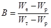
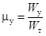
Коэффициент консистенции B показывает, в каком состоянии (степень пластичности) будут находиться грунты поверхностных слоев при Wе (естественной влажности), полученной в полевых условиях. При помощи этого показателя может быть осуществлен ориентировочный прогноз изменения консистенции грунта поверхностных слоев. Для этой цели определяют B1 с учетом расчетной влажности, которой может обладать грунт r поверхностных слоях после набухания или оттаивания.
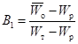
где 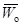
Коэффициент относительной влажности на пределе усадки позволяет классифицировать глинистые грунты по степени их усадочности. Для этой цели можно использовать зависимости μу = f(Wт - Wр), приведенную на рис. 1. По значению μу глинистые грунты подразделяют:
- на малоусадочные и безусадочные
μу = 0,7 ÷ 1;
- усадочные и среднеусадочные
μу = 0,4 ÷ 0,7;
- сильноусадочные
μу = 0,4 ÷ 0,1.
График (см. рис. 1) дает также возможность по значению (Wт - Wр) определять величину Wy и Vy.
Наиболее опасными, с точки зрения развития сплывов и оплывин, являются грунты с μу = 0,7 ÷ 0,1. Для малоусадочных и безусадочных грунтов имеется вместе с тем опасность развития эрозионных деформаций.
На стадии качественной оценки должна быть определена глубина активной зоны h воздействия погодно-климатических факторов на грунты поверхностных слоев высоких откосов. Ее определяют по результатам наблюдений за деформациями откосов на ранее построенных и эксплуатируемых участках земляного полотна.
Ориентировочно за глубину активной зоны может быть принята глубина промерзания (рис. 2) или глубина высушивания, определяемая по формуле
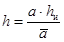
где hи - величина испарения (см. Климатический атлас СССР);
a - показатель изменения объема глинистых грунтов при высушивании, а = 0,111;
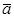
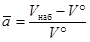
Vнаб, V° - объем образца грунта соответственно после набухания и после усадки (по данным лабораторных испытаний).
Рис. 1. Зависимость коэффициента относительной влажности на пределе усадки μу от величины относительной объемной усадки Vу (1) и от числа пластичности (2)
Прогнозы вероятности развития деформаций, связанных с резким переходом глинистых грунтов в текучее состояние, осуществляют в зависимости от расчетных воздействующих факторов на основе сопоставления:
а) расчетной величины опасного набухания aоп и свободного набухания aн (расчетный воздействующий фактор - набухание-высушивание);
б) расчетной влажности Waf после оттаивания (с учетом предварительного набухания-высушивания) с влажностью грунта (поверхностного слоя) на пределе текучести (расчетный воздействующий фактор - промерзание-оттаивание).
Рис. 2. Карта глубин сезонного промерзания
Величину aоп находят по формуле
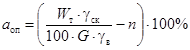
где Wт - влажность грунта (поверхностного слоя) на пределе текучести;
γск - объемный вес скелета грунта (для выемок - по данным инженерно-геологических изысканий, для насыпей - плотность при оптимальной влажности и коэффициенте уплотнения, равном 0,85-0,9), г/см3;
n - пористость грунта, соответствующая γск;
G - коэффициент водонасыщения;
γв - объемный вес воды, г/см3.
Величину свободного набухания ан определяют в лабораторных условиях (см. раздел «Определение расчетных характеристик»).
Рис. 3. Пример зависимости относительной величины набухания от нормальных напряжений при расчетной влажности W1, W2 и объемном весе грунта γ1, γ2
Если aоп ≤ ан, то имеется опасность перехода грунта, некоторой части поверхностного слоя в текучее состояние. Глубину слоя, который может перейти в текучее состояние, находят по выражению
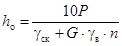
где Р - величина нормальных напряжений, определяемая по графику (рис. 3); при значении aнр = aоп находят величину набухания aнр при данном Р.
Величину Waf определяют в лаборатории или ориентировочно, с учетом известной ранее величины aнр и относительной величины морозного пучения f, принимаемой по табл. 1, по следующей формуле:
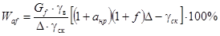
где Gf - коэффициент водонасыщения после оттаивания, равный 0,95÷1.
Для определения мощности слоя, который может перейти в текучее состояние, на основе лабораторных испытаний или по формуле (5) строят график Waf = f(P) с учетом затухания величины набухания при увеличении значений нормальных напряжений P (см. рис. 3).
Пример. По данным инженерно-геологических изысканий грунт после вскрытия откоса обладает следующими характеристиками:
γск =1,56 г/см3; n = 0,425; Wт = 32,0 %; aн = 12 %;
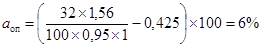
aоп (6 %) < aн (12 %) - грунт находится в текучем состоянии.
По графику (см. рис. 3) находим, что при aнр = aоп = 6 %,
Р = 0,043 кгс/см2.
Толщина сплывоопасного слоя грунта равна
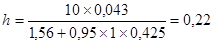
Вероятность возникновения сплывов, оплывин и выносов при наличии водоносных горизонтов, которые выклиниваются в пределах активной зоны, устанавливают по данным инженерно-геологических изысканий.
Количественная оценка
Количественную оценку местной устойчивости проводят для уточнения принятой конструкции высоких (выше 12 м) откосов насыпей и сухих выемок, сложенных глинистыми грунтами, а также выемок глубиной не менее 3 м при наличии водоносных горизонтов. Расчетную схему и метод расчета назначают в зависимости от ожидаемых деформаций в поверхностных слоях откосов.
Для проведения расчетов необходимы следующие данные:
- конструкция откоса, назначенная на основе оценки общей устойчивости;
- глубина активной зоны - зоны активного воздействия погодно-климатических факторов в поверхностных слоях откоса (по длине его образующей);
- силы, действующие в пределах активной зоны откоса (в том числе и на его поверхность);
- расчетные значения прочностных характеристик грунта активной зоны угол внутреннего трения φWN и сцепления cWN с учетом ожидаемых воздействий основных погодно-климатических факторов (на что указывает индекс N).
Таблица 1
Ориентировочные значения величины относительного пучения f в зависимости от числа пластичности (Wт - Wр) и расчетной влажности в зоне промерзания
|
Wт - Wр |
Значения f при влажности, % |
||||||||||
|
16 |
18 |
20 |
22 |
24 |
26 |
28 |
30 |
32 |
34 |
36 |
|
|
1 |
0,015 |
0,018 |
0,021 |
0,025 |
0,028 |
0,031 |
0,034 |
0,037 |
0,041 |
0,044 |
0,047 |
|
2 |
0,022 |
0,025 |
0,029 |
0,032 |
0,035 |
0,038 |
0,041 |
0,045 |
0,048 |
0,051 |
0,054 |
|
3 |
0,034 |
0,037 |
0,040 |
0,044 |
0,047 |
0,050 |
0,053 |
0,056 |
0,060 |
0,063 |
0,066 |
|
4 |
0,050 |
0,054 |
0,057 |
0,060 |
0,063 |
0,066 |
0,070 |
0,073 |
0,076 |
0,079 |
0,082 |
|
5 |
- |
0,075 |
0,078 |
0,081 |
0,084 |
0,088 |
0,091 |
0,094 |
0,097 |
0,100 |
0,103 |
|
6 |
|
0,097 |
0,100 |
0,104 |
0,107 |
0,110 |
0,113 |
0,116 |
0,120 |
0,123 |
0,126 |
|
7 |
|
|
0,130 |
0,133 |
0,136 |
0,139 |
0,143 |
0,146 |
0,149 |
0,152 |
0,155 |
|
8 |
|
|
0,164 |
0,167 |
0,170 |
0,173 |
0,176 |
0,170 |
0,183 |
0,186 |
0,189 |
|
9 |
|
|
|
0,205 |
0,208 |
0,212 |
0,215 |
0,218 |
0,221 |
0,224 |
0,227 |
|
10 |
|
|
|
0,248 |
0,251 |
0,254 |
0,258 |
0,261 |
0,264 |
0,267 |
0,270 |
Примечание. Объемный вес скелета грунта γск принят равным 1,6 г/см3. Интенсивность пучения fγп для других значений γп определяют по формуле
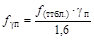
Количественная оценка необходима в случае проявления деформаций локального скольжения, пластического течения и выносов.
Расчеты по недопущению развития эрозионных деформаций не проводят в связи с назначением типа укрепления поверхности откосов уже на стадии качественной оценки.
Методы расчета и условия их применения
В основу количественной оценки местной устойчивости откосов с учетом возможности развития в пределах активной зоны деформаций локального скольжения или пластического течения положены следующие критерии:
1) недопущение полного нарушения устойчивости поверхностных слоев (в пределах активной зоны) откоса с образованием некоторой поверхности скольжения;
2) ограничение пластических деформаций в поверхностных слоях активной зоны.
Расчет по недопущению полного нарушения устойчивости
Расчет осуществляется по схемам:
1) единичного элемента;
2) единичного элемента с упорной призмой;
3) круглоцилиндрической поверхности скольжения.
1. По схеме единичного элемента следует оценивать степень местной устойчивости откосов насыпей, сложенных глинистыми грунтами.
Коэффициент запаса местной устойчивости определяют по формуле
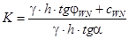
где φWN, cWN - расчетные значения угла внутреннего трения и сцепления при расчетной влажности с учетом погодно-климатических воздействий;
h - максимальная глубина активной зоны, м;
α - угол наклона откоса к горизонту.
2. При оценке местной устойчивости откосов выемок из глинистых грунтов необходимо учитывать в расчетной схеме влияние упорной призмы. В этом случае коэффициент запаса местной устойчивости вычисляют по формуле
K = β (tgφWN · cosα + ξ) + c0, (7)
где β
- коэффициент, равный 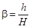
Н - высота откоса или его яруса при заданном заложении, м;
c0 - величина приведенного
сцепления, 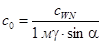
ξ - коэффициент пассивного отпора, определяемый по формуле
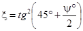
ψ - угол сдвига, который находят по формуле
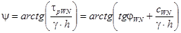
τрWN - сопротивляемость грунта сдвигу с учетом воздействий погодно-климатических факторов, кгс/см2.
При заданном заложении откоса и его высоте (или высоте яруса) целесообразно определять безопасную длину откоса Lбез (до зоны предполагаемого выпора):
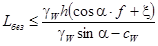
Рис. 4. График для
определения
коэффициентов A и B:
значения A - сплошная линия; значения В - пунктирная линия; , H - высота откоса, h - глубина активной зоны
3. В случае использования в качестве расчетной схемы круглоцилиндрической поверхности скольжения в пределах активной зоны h коэффициент запаса местной устойчивости вычисляют по формуле
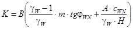
где A и B - коэффициенты, принимаемые по графику (рис. 4) в зависимости от отношения и показателя заложения m.
Расчет по условию ограничения пластических деформаций
Степень обеспечения местной устойчивости по второму критерию выражают через коэффициент стабильности Kстаб, представляющий собой отношение величины порога ползучести с учетом воздействий основных погодно-климатических факторов (промерзания-оттаивания, набухания-высушивания) к величине касательных напряжений, которые являются функцией крутизны откоса:
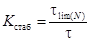
где τlim(N) - порог ползучести;
cCN - часть общего сцепления, обусловленная наличием невосстанавливающихся связей;
zi - текущая координата рассматриваемого горизонта активной зоны h м от поверхности откоса по нормали к ней.
Минимальное значение коэффициента стабильности Kстаб = f(z) устанавливают путем графического построения зависимости, точки которой вычисляют по выражению (13) для различных горизонтов z в зависимости от расчетных значений φWN, cCN на этих горизонтах, определяемых с учетом всех влияющих факторов, в том числе и напряженного состояния.
Приближенно минимальное значение коэффициента стабильности можно определить по формуле
; (14)
В тех случаях, когда еще нет данных о значениях φWN, cCN для сугубо ориентировочных расчетов рекомендуется формула
; (15)
где φW - значение угла внутреннего трения при расчетной влажности (но без учета погодно-климатических факторов).
Условие отсутствия пластических деформаций соблюдается в любой точке активной зоны, если .
Учет силового воздействия подземных вод
Силовое воздействие подземных вод для откосов выемок учитывают при наличии:
а) трещиноватых глинистых грунтов;
б) выклинивающихся горизонтов подземных вод на поверхность откоса.
В первом случае местную устойчивость оценивают в предположении развития сплывов и оплывин в пределах активной зоны h при величине возможного напора hв.
Коэффициент запаса определяют по следующим формулам, соответственно для единичного элемента и при учете пассивного отпора:
; (16)
; (17)
. (18)
Фиктивный угол внутреннего трения, входящий в выражение ψв = arctg Fрв, вычисляют по формуле
, (19)
где Fрв - коэффициент сдвига;
- объемный вес грунта с учетом гидростатического взвешивания.
Безопасную длину откоса с учетом силового воздействия подземных вод определяют по формуле
м. (20)
Во втором случае местную устойчивость оценивают в предположении развития деформаций в виде выносов (при наличии в откосе выемки водоносных песчаных или супесчаных слоев или прослоек). Коэффициент запаса рекомендуется определять по формуле Н. Н. Маслова (Н. Н. Маслов. «Основы механики грунтов и инженерной геологии», М., 1968).
; (21)
Максимальный угол наклона участка откоса, в пределах которого возможно развитие деформаций в виде выносов, рекомендуется определять по формулам, предложенным Ю. А. Соболевским (Ю. А. Соболевский. «Устойчивость откосов мелиоративных каналов», Минск, «Урожай», 1965):
а) для случая направления фильтрации вдоль поверхности откоса
; (22)
б) для случая выхода фильтрационного потока под углом δ к нормали откоса
; (23)
в) для случая фильтрации параллельно поверхности водоупорного слоя
. (24)
Требуемые минимальные значения коэффициентов запаса местной: устойчивости при различных методах расчета приведены в табл. 2.
Таблица 2
Требуемые минимальные значения коэффициентов запаса
|
Однородный сухой откос, сложенный глинистыми грунтами на прочном основании |
Прочие случаи |
|
|
Метод единичного элемента................................................................................. |
1,25 |
1,3 |
|
Метод единичного элемента с учетом пассивного отпора.......................... |
- |
1,2 |
|
Метод круглоцилиндрической поверхности скольжения............................. |
1,5 |
1,5 |
|
Расчет по условию ограничения пластических деформаций...................... |
1,0 (коэффициент стабильности Kстаб) |
1,0 (коэффициент стабильности) |
Определение расчетных характеристик
Для качественной и количественной оценки местной устойчивости должны быть определены следующие расчетные характеристики глинистых грунтов в поверхностных слоях высоких откосов:
Wрасч - расчетная влажность;
aн - максимальная величина набухания;
f0 - максимальная величина пучения;
cWN, cCN, φWN - общее сцепление, невосстанавливающаяся часть сцепления и угол внутреннего трения при расчетной влажности с учетом циклических воздействий погодно-климатических факторов.
Расчетные значения максимальных величин относительного набухания и пучения, а также соответствующие им значения Wрасч определяют:
для выемок на образцах (2-5) грунта с ненарушенной структурой, отобранных из глубины активной зоны расчетного контура откоса;
для насыпей на предварительно подготовленных путем искусственного уплотнения образцах при оптимальной влажности до плотности, равной 0,8-0,9 от стандартной.
Для определения aн образцы грунта помещают в приборы для набухания (целесообразно использовать приборы предварительного уплотнения); после первого набухания фиксируют по мессуре установившуюся деформацию набухания (мм) и вычисляют величину относительного набухания a0н:
,
где Δh0 - замер на мессуре, мм;
h0 - исходная высота испытываемого образца грунта, мм.
Затем образцы грунта высушивают сначала на воздухе, при комнатной температуре, далее в термостатах до влажности Wy на пределе усадки.
Значение Wy может быть определено по графику (см. рис. 1). После высушивания образцы набухают повторно, для них определяют
,
где Δh1 - деформация набухания после первого высушивания.
Таким образом проводят несколько циклов набухания-высушивания. Как правило, максимальная величина относительного набухания соответствует второму или третьему циклам (по набуханию). Ее находят путем построения зависимости
aн = f(N),
где N - число циклов набухания-высушивания.
При определении (на стадии качественной оценки) мощности грунта, переходящего в текучее состояние, указанные испытания следует проводить под несколькими бытовыми нагрузками, максимальная из которых должна соответствовать величине нормальных напряжений от веса грунта в пределах всей мощности активной зоны.
Максимальную величину относительного морозного пучения f0 определяют в специальных приборах, позволяющих промораживать грунт только сверху при постоянном подтоке воды снизу.
После каждого промерзания определяют
,
где Δh0 - деформация пучения, мм;
h0 - исходная высота образца грунта, мм.
Максимальное значение f0 и соответствующее ему значение расчетной влажности находят после нескольких циклов (3-5) промерзания-оттаивания путем построения зависимости
f0 = f(N),
где N - число циклов промерзания-оттаивания.
Сдвиговые параметры φWN, cWN, cCN определяют по методике плотности-влажности, предложенной проф. Н. Н. Масловым.
Учет циклических воздействий погодно-климатических факторов осуществляют следующим образом.
Для малоусадочных, безусадочных и непучинистых глинистых грунтов поверхностных слоев откосов учитывают только увлажнение жидкими атмосферными осадками и водами снеготаяния. Сдвиговые испытания проводят по стандартной методике плотности-влажности с построением итоговых зависимостей: угла внутреннего трения и величины общего сцепления от влажности. Расчетные величины получают путем экстраполяции кривых до значений, которые соответствуют расчетной влажности.
Для усадочных, среднеусадочных, сильноусадочных, а также пучинистых грунтов (количество пылеватых частиц больше 50 %) циклические воздействия (набухание-высушивание или промерзание-оттаивание) моделируют в лаборатории. Для каждой серии образцов, сдвигаемых по методике плотности-влажности, задают определенное число моделируемых циклов: 1, 5, 10. Результаты обрабатывают путем построения сначала зависимостей сопротивляемости сдвигу от влажности при различном числе циклов, а затем зависимостей φWN, cWN от числа циклов при расчетной влажности в зоне сдвига.
В качестве расчетных принимают минимальные значения φWN, cWN, определяемые графически.
Подобную методику следует принимать только для наиболее ответственных земляных сооружений в сложных условиях.
В менее сложных случаях целесообразно использовать следующую методику. Сдвиговые испытания по методике плотности-влажности для каждого образца грунта осуществляют дважды: сначала производят обычный сдвиг, а затем разрезают образец по плоскости сдвига (фиксированная плоскость с искусственно разрушенной структурой), обе половинки («плашки») соединяют вместе, прикладывают первоначальную вертикальную нагрузку в течение 2-5 мин и осуществляют повторный сдвиг («плашка по плашке»). По результатам аналогично строят итоговые зависимости φWN и cWN от влажности по данным «плашковых» испытаний. Величины φWN и cWN принимают в качестве расчетных при полученной ранее расчетной влажности, определенной по данным испытаний на набухание-высушивание или промерзание-оттаивание.
Рис. 5. Номограмма для определения ориентировочных значений угла внутреннего трения φ и сцепления c
Величину cCN находят как разность между величиной сопротивляемости сдвигу при расчетной влажности и величиной «плашковой» прочности при той же влажности.
cCN = τрWN - τ0pWN кГс/см2, (25)
где τрWN - сопротивляемость сдвигу при расчетной влажности;
τ0рWN - то же по результатам испытаний «плашка по плашке».
Рис. 6. График для определения коэффициента Kм′ в зависимости от числа пластичности
Все сдвиговые испытания проводят при нормальных напряжениях от 0,05 до 0,5 кгс/см2 на одноплоскостном сдвиговом приборе.
При сугубо ориентировочных расчетах для некоторых разновидностей пылеватых грунтов Западной Сибири расчетные значения φWN и cWN можно определять по выражениям
; φWN = φм - 2,
где cм и φм - нормативные значения угла внутреннего трения и сцепления, принимаемые по графику (рис. 5), в зависимости от коэффициента пористости грунта ε при расчетной влажности Wрасч и влажности грунта на границе раскатывания Wp;
Kм - коэффициент морозной чувствительности,
,
Kм′ определяют по графику (рис. 6) в зависимости от числа пластичности.
Рис. 1. Элементы решетчатой конструкции (вариант № 1):
1 - балочки; 2 - монтажная плита (узловое объединение); 3 - железобетонная свайка
Рис. 2. Решетчатая конструкция (вариант № 2):
а - поперечный разрез; б - план; 1 - элемент № 1; 2 - элемент № 2
Рис. 3. Решетчатая конструкция (вариант № 3):
1 - балочка (сборный элемент); 2 - цементный раствор; 3 - материал заполнения ячеек; 4 - стальной штырь
Рис. 4. Решетчатая конструкция (вариант № 5):
а - без упора; б - с упором; 1 - решетка; 2 - материал заполнения ячеек; 3 - упор; 4-5 - элементы; 6 - цементный раствор; 7 - стальной штырь
Рис 5. Железобетонная рама (вариант № 6, а).
а - поперечный разрез, б - план, в - рама; 1 - материал заполнения ячеек; 2 - решетка; 3 - упор; 4 - цементный раствор; 5 - стальной штырь
Рис. 6. Деревянная опалубка:
1 - боковой вкладыш без штыря; 2 - поперечный закладной брусок; 3 - боковой вкладыш с пазом; 4 - боковой вкладыш со штырем; 5 - продольный брус; 6 - поперечная лага; 7 - доска поддона
Рис. 7. Стальная кассета:
а - профиль; б - план; в - поперечный разрез; 1 - винт; 2 - гайка зажимная; 3 - торцевая крышка; 4 - направляющая втулка; 5 - штырь; 6 - поддон; 7 - пробка; 8 - стенка; 9 - промежуточная стенка
Рис. 8. Вибромашина Купавинского завода ЖБК треста «Центродорстрой»
Рис. 9. Монтаж решетчатой конструкции при укреплении подтопляемых откосов на мостовом переходе через Синганайскую протоку (автомобильная дорога Нефтеюганск - Сургут, трест «Тюмендорстрой»)
Рис. 10. Укрепление конусов на автомобильной дороге Киев - Борисполь (трест «Киевдорстрой» Минавтодора УССР)
Рис. 11. Укрепление откосов выемки на автомобильной дороге Преградная - Псемен (трест «Севкавдорстрой»)
Рис. 12. Технологическая схема монтажа решетчатых конструкций:
I - планировка и распределение растительного грунта; II - разгрузка сборных элементов; III - устройство сплошного бетонного упора; IV-V - монтаж сборных элементов; VI-VII - заполнение ячеек; 1 - агрегат ЦНИИС; 2 - автокран; 3 - автомобиль для перевозки сборных элементов; 4 - материал для заполнения ячеек
В основу определения экономической эффективности положены расчеты приведенных сопоставимых затрат способов укрепления конусов и откосов земляного полотна решетчатыми и другими видами конструкций, применяемыми в транспортном строительстве, а также годового экономического эффекта от внедрения нового способа укрепления.
Общие положения приведены в СН 423-71 и «Типовой методике определения экономической эффективности капитальных вложений», разработанной ЦНИИСом и Союздорнии в 1972 г.
Определяющими факторами, влияющими на величину приведенных сопоставимых затрат по укреплению откосов, являются:
- степень обеспечения местной устойчивости откосов и конусов;
- стоимость эксплуатации машин (в конкретных условиях);
- скорость проведения укрепительных работ при эффекте немедленной защиты откосов от проявления деформаций;
- стоимость материалов с учетом их транспортировки;
- трудозатраты.
Определяющими факторами, которые влияют на величину годового экономического эффекта от применения сборных решетчатых конструкций, являются:
- сроки службы предлагаемого и эталонного вариантов конструкций укрепления;
- эксплуатационные затраты, данные о которых уточняют по состоянию построенных ранее участков дорог в аналогичных условиях, в том числе включая сведения о характере и частоте деформаций и т.п.;
- объем внедрения.
Экономическую эффективность рассчитывают в следующем порядке.
1. Выбирают эталон, в сопоставлении с которым определяют эффективность предлагаемого способа или технологии.
2. Устанавливают номенклатуру основных и дополнительных показателей.
3. Находят величину установленных показателей.
4. Анализируют показатели эталонного варианта и предлагаемого.
Порядок расчета экономической эффективности
Расчет экономической эффективности состоит из двух этапов.
Первый этап - подготовительный.
Он заключается в сборе необходимых данных, выборе эталона и оборудования. При этом определяется режим работы основного и вспомогательного оборудования, рассчитывается потребность машин, материалов, рабочей силы по технологии эталона и предлагаемого способа. (Все это находит отражение в технологических схемах производства работ).
Второй этап - собственно расчет экономической эффективности.
Расчет экономической эффективности включает в себя определение общих данных (показателей) и расчет приведенных сопоставимых затрат R = C + EK на единицу продукции (в табличной форме - табл. 1).
Таблица 1
Расчет приведенных сопоставимых затрат
|
№ строки |
Показатели |
Единицы измерения |
I вариант |
II вариант |
|
|
Общие данные |
|
|
|
|
1 |
Расчетная стоимость машин и оборудования. (Оптовая цена + транспортные расходы. Транспортные расходы = 7 % от оптовой цены) |
тыс. руб. |
А |
Б |
|
2 |
Производительность отряда: |
|
|
|
|
|
а) в год (при Q смен)............................................... |
км |
P1 × Q1 |
P2 × Q2 |
|
|
б) в смену.............................................................. |
пог. м |
P1 |
P2 |
|
3 |
Количество рабочих, занятых в смену: |
|
|
|
|
|
а) на машинах....................................................... |
чел. |
Тм1 |
Тм2 |
|
|
б) при машинах (26 % от строки 3, а, если это требуется по технологии) |
» |
Тм1 |
Тм2 |
|
|
в) на ремонте машин (29 % от строки 3, а)................ |
» |
Тр1 |
Тр2 |
|
|
Итого по строке 3............................................... |
чел. |
Т1 |
Т2 |
|
4 |
Основная заработная плата рабочих в смену |
руб. |
З1 |
З2 |
|
5 |
Прямые затраты в смену: |
|
|
|
|
|
а) эксплуатация машин.......................................... |
» |
Э1 |
Э2 |
|
|
б) стоимость материалов........................................ |
» |
M1 тарифная ставка |
M2 тарифная ставка |
|
|
в) заработная плата рабочих.................................. |
» |
Тп1 |
Тп2 |
|
|
Итого прямых затрат в смену:................................. |
руб. |
П1 |
П2 |
|
|
Показатели на единицу продукции |
|
|
|
|
6 |
Прямые затраты.................................................... |
» |
|
|
|
7 |
Основная заработная плата рабочих....................... |
руб. |
|
|
|
8 |
Трудовые затраты................................................. |
чел. |
|
|
|
9 |
Накладные расходы: |
|
|
|
|
|
а) условно-постоянные (10 % от прямых затрат)....... |
руб. |
|
|
|
|
б) зависящие от основной заработной платы (15 % от основной заработной платы) |
» |
|
|
|
|
в) зависящие от трудозатрат (1 руб. 90 коп. на чел.-день) |
» |
1,9Ч1 |
1,9Ч2 |
|
|
Итого.................................................................... |
руб. |
HP1 |
HP2 |
|
10 |
Сопоставимая себестоимость работ (стр. 6 + стр. 9 итого) |
» |
C1 |
C2 |
|
11 |
Удельные капиталовложения в машины (стр. 1; стр. 2, а) |
» |
K1 |
K2 |
|
12 |
Приведенные сопоставимые затраты R = C + EK при E = 0,12 (стр. 10 + 0,12 × стр. 11) |
|
R1÷Q |
R2 |
Полученные по указанной методике приведенные сопоставимые затраты R не учитывают повышение качества работ (увеличение срока службы поверхностных слоев конусов и откосов). В связи с указанным необходимо проводить расчеты годового экономического эффекта с учетом дополнительных затрат (эксплуатационных) для приведения выбранного эталона конструкции укрепления к новому качеству (к новому сроку службы).
Окончательно судят об эффективности применения того или иного варианта на основе сопоставимых затрат с учетом приведения эталонной конструкции к новому качеству.
Годовой экономический эффект в этом случае рассчитывают по формуле
Э = Q[R1 - R2] = Q[(C1 + EK1) μ - (C2 + EK2)],
где Q - площадь укрепляемой поверхности откоса, м2;
R1 и R2 - приведенные сопоставимые затраты сравниваемых конструкций укрепления, руб.;
C1 и С2 - сопоставимые себестоимости работ, руб.;
E - нормируемый коэффициент эффективности капитальных вложений, E = 0,12;
K1 и K2 - удельные капитальные вложения по вариантам, руб.;
μ - коэффициент приведения к новому качеству (к новому сроку службы сооружения) с учетом отдаленности затрат,
;
также μ находят по табл. 2 в зависимости от γ и E;
,
где γ - коэффициент увеличения срока службы сооружения или его отдельных конструктивных элементов при новом качестве работ;
E0 - нормируемый коэффициент отдаленности затрат; E0 = 0,08;
T1 и T2 - соответственно сроки службы решетчатой конструкции укрепления сравниваемого варианта.
Таблица 2
Коэффициент приведения к новому сроку службы сооружения (μ)
|
Т1, годы |
||||||||||
|
1 |
2 |
3 |
4 |
6 |
8 |
10 |
15 |
20 |
30 |
|
|
1,1 |
1,09 |
1,09 |
1,08 |
1,07 |
1,06 |
1,05 |
1,05 |
1,03 |
1,02 |
1,01 |
|
1,2 |
1,18 |
1,17 |
1,16 |
1,15 |
1,13 |
1,11 |
1,09 |
1,06 |
1,04 |
1,02 |
|
1,3 |
1,28 |
1,26 |
1,24 |
1,22 |
1,19 |
1,16 |
1,14 |
1,10 |
1,07 |
1,03 |
|
1,4 |
1,37 |
1,34 |
1,32 |
1,29 |
1,25 |
1,21 |
1,19 |
1,13 |
1,09 |
1,04 |
|
1,6 |
1,56 |
1,51 |
1,48 |
1,44 |
1,38 |
1,32 |
1,28 |
1,19 |
1,13 |
1,06 |
|
1,8 |
1,74 |
1,68 |
1,63 |
1,59 |
1,51 |
1,42 |
1,37 |
1,25 |
1,17 |
1,09 |
|
2 |
1,93 |
1,85 |
1,79 |
1,73 |
1,63 |
1,54 |
1,47 |
1,32 |
1,22 |
1,10 |
|
3 |
2,78 |
2,59 |
2,42 |
2,25 |
2,03 |
1,83 |
1,69 |
1,42 |
1,22 |
1,11 |
|
4 |
3,57 |
3,22 |
2,92 |
2,65 |
2,28 |
1,99 |
1,79 |
1,45 |
1,28 |
1,11 |
|
5 |
4,31 |
3,75 |
3,32 |
2,94 |
2,44 |
2,08 |
1,84 |
1,46 |
1,28 |
1,11 |
В таблице приведены значения величины μ при E0 = 0,08 для значений Т1 (от 1 до 30 лет) и γ (от 1,1 до 5). Для промежуточных значений следует пользоваться интерполяцией.
СОДЕРЖАНИЕ